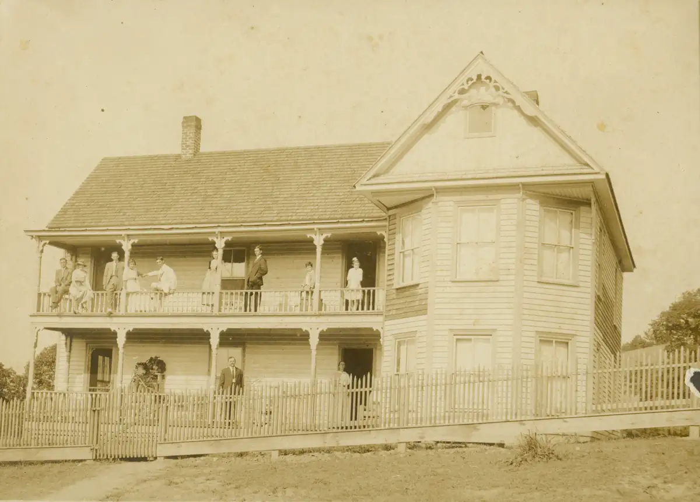

Home / Browns / 015 Brown Mysteries / brn015-00009
brn015-00009
← Return to 015 Brown Mysteries
← brn015-00008 brn015-00010 →
I had noted that this was the Marshall House, but I don't remember how I knew that. Dated August 7, 1915. Large cabinet card-style photo. The man and woman on the lower porch appear to be the same man and woman from unk000-00003.tif.

Actual size: 6.53" × 4.69" · Scanned at: 600 dpi · 11.03 MP (3918×2814) · Image date: 7 May 2006 · Comment date: 7 May 2006
Copyright © 2005–2026 Thomas Krehbiel. Images are freely distributable for personal use. For more information about these images contact Thomas Krehbiel (tkrehbiel@gmail.com).
Photos were scanned at either 300dpi or 600dpi, depending on the quality of the photograph. Slides were scanned at 1800dpi. Documents were scanned at 100dpi or 150dpi. Photoshop enhancements: most images have had their contrast improved. Some color photos were corrected to restore color balance. Some blurry images were mildly sharpened. Occasionally dust, scratches, and blemishes were removed digitally.
{kind=link}